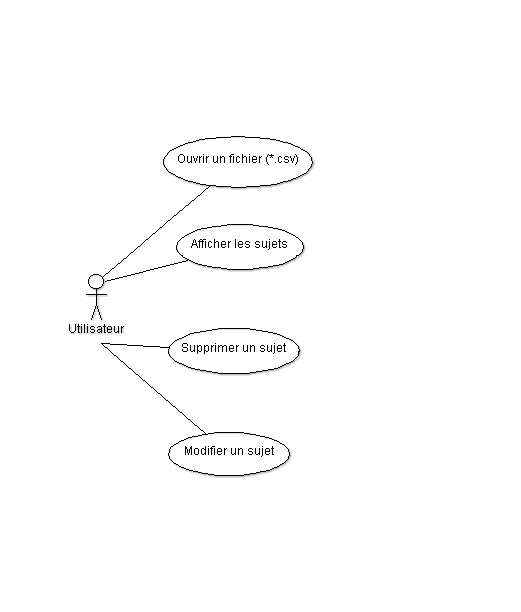

Membres du groupes
-
Léo Calvis
-
François-Marie d’Aboville
-
Thomas Bonfill
-
Jordan Brocario
-
Tim Dazayous
-
Alexandre Erb
Backlog de Produit du Projet OPTI
Les fonctionnalités initiales demandées sont les suivantes :
-
Liste des sujets de projet tutoré de l’année
-
Créer/Supprimer/Modifier un sujet
-
Lister les sujets avec filtres
-
-
Voeux des groupes d'étudiants
-
Définir des groupes d'étudiants
-
Associer des étudiants à des groupes
-
Définir les voeux d’un groupe
-
etc
-
-
Affectation des projets aux groupes d'étudiants
-
Définir (affectation) un sujet pour un groupe
-
Lister le nombre de voeux par rang pour un sujet
-
Lister pour un groupe le nombre de "concurrents" par rang de voeux.
-
Lister les sujets affectés / non affectés
-
Lister les groupes affectés / non affectés
-
Calcul automatique de pré-affectation "au mieux" sur un ensemble de groupes non affectés
-
etc
-
-
Affectation des intervenants sur chaque projet tutoré
-
Définir les intervenants d’un projet tutoré
-
Lister les projets par intervenant
-
Lister les intervenants par projet
-
etc
-
Structure du code à la fin du sprint
Le pattern (ou patron) de conception utilisé est maintenant le Modèle / Vue / Contrôleur. Ce patron possède différents avantages, elle permet une conception claire grâce à la séparation des données. L’application connaîtra de nombreux changements au cours des sprints et ce pattern permet un gain de temps de maintenance et dans l'évolution du l’application. Ce pattern permet aussi une meilleur division de travail entre les développeurs qui peuvent alors travailler sur leur partie sans perturber le travail des autres. L’application est donc séparée en trois packages principaux :
-
Modèle : contient les données manipulées par l’application (base de données) et assure leur intégrité
-
Etudiant.java
-
Groupe.java
-
Model.java
-
Sujet.java
-
Entity.java
-
Intervenant.java
-
-
Vue : contient l’interface graphique de l’application
-
CreerSujet.java
-
CreerEtu.java
-
Fenetre.java
-
ListeSujet.java
-
SupprimerSujet.java
-
SujetOnglet.java
-
EtudiantOnglet.java
-
IntervenantOnglet.java
-
ListeSujet.java
-
PanelJListjava
-
-
Contrôleur : permet le lien entre la vue et le modèle
-
Controller.java
-
-
CSV : librairie CSV
-
LibCsv.java
-
LibCsvTest.java
-
mainCsv.java
-
Pour plus d’informations sur les différentes classes, vous pouvez les trouvez dans la JavaDoc. Elle se lance en ouvrant le fichier "index.html" dans le dossier "doc".
Définition du format CSV
Lors de ce projet, les données que nous utilisons telles que les étudiants ou les sujets sont stockées dans des fichiers .csv. Alors qu’il y a différentes spécifications et implémentations pour le format CSV , il n’y a pas de l’existence d’une spécification formelle, ce qui permet une grande variété d’interpretations des fichiers CSV. La section suivante documente le format qui semble être suivi lors de la plupart des implémentations:
-
Chaque enregistrement est situé sur une ligne différentes et délimité par un retour à la ligne (CRLF). Exemple:
aaa,bbb,ccc CRLF zzz,yyy,xxx CRLF -
Le dernier enregistrement dans le fichier peut avoir un retour à la ligne en fin de ligne mais ce n’est pas une obligation. Exemple:
aaa,bbb,ccc CRLF zzz,yyy,xxx -
Il peut y avoir une entête optionnelle apparaissant ainsi à la première ligne du fichier avec le même format qu’un enregistrement normal. Cette entête va contenir les noms correspondants aux champs dans le fichier et devrait contenir le même nombre de champs que les autres enregistrements du fichier. Exemple :
nom_champ,nom_champ,nom_champ CRLF aaa,bbb,ccc CRLF zzz,yyy,xxx CRLF
Choix techniques notables
Choix du pattern Modèle - Vue - Controller.
Affichage des sujets, étudiants, groupes, et intervenants dans des JList.
Ces différentes données sont stockées dans des ArrayList. == Diagrammes de conception
Modèle de données
Le modèle de données ci-dessus est le model de données actuel. Le modèle de données final sera le suivant lorsque toutes les fonctionnalitées seront implémentées :

Diagramme de cas d’utilisation :

L’administrateur peut donc ouvrir et sauvegarder un fichier CSV (contenant des sujets uniquement pour le moment). L’administrateur peut afficher la liste des sujets, créer un sujet, modifier un sujet et supprimer un sujet. L’administrateur peut créer un étudiant, modifier un étudiant et les supprimer. L’administrateur peut créer un groupe et ajouter des étudiants à un groupe. L’administrateur peut créer un intervenant.
Tests graphiques de l’interface :
| Nom Test | Action | Resultat attendu | State |
|---|---|---|---|
Ouvrir Fichier .csv pour les sujets |
Cliquer sur l’onglet "Fichier" puis "Ouvir Csv" |
Chargement du fichier et mise à jour des données |
X |
Afficher un sujet |
Dans l’onglet sujet, cliquer sur un sujet |
Affichage des détails d’un sujet |
X |
Créer un sujet |
Dans l’onglet sujet, cliquer sur Creer un sujet et remplir les champs |
Création du sujet |
X |
Modifier sujet |
Dans l’onglet sujet, cliquer sur un sujet puis sur Activer la modification, et modifier les champs souhaités et cliquer sur Valider |
Modification du sujet |
X |
Supprimer Sujet |
Dans l’onglet sujet, cliquer sur un sujet puis sur Supprimer |
Suppression du sujet |
X |
Créer un groupe |
Dans l’onglet etudiant, cliquer sur Ajouter(en dessous de Groupe) |
Ajout d’un nouveau groupe |
X |
Ajouter un étudiant |
Dans l’onglet etudiant, cliquer sur Ajouter(en dessous de Etudiant) et remplir les champs |
Ajout d’un nouvel etudiant |
X |
Supprimer un étudiant |
Dans l’onglet etudiant, cliquer sur un étudiant puis sur supprimer |
Suppression de l’etudiant selectionnée |
X |
Modifer un étudiant |
Dans l’onglet etudiant, cliquer sur un étudiant puis sur modifier et modifiers les champs souhaités et cliquer sur Valider |
Modification de l'étudiant selectionnée |
X |
Sauvegarder Sujet |
Cliquer sur l’onglet "Fichier" puis "Sauvegarder Sujet" |
Sauvarde des sujets dans le fichier .csv |
X |